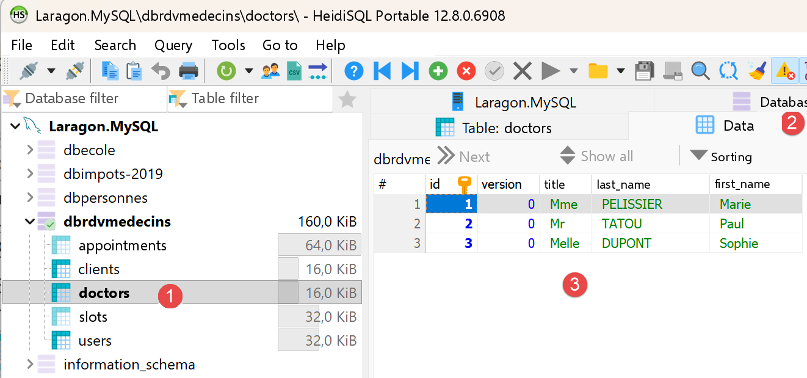

3. Capítulo 2 - Instalação do servidor [NestJS]
O cliente [Kotlin] descrito neste documento precisa de um servidor para consultar: o servidor [NestJS] do aplicativo [RdvMedecins], incluído neste documento na pasta [rdvmedecins-nestjs-server]. Como este documento se concentra no [Kotlin], esse servidor é tratado como uma “caixa-preta”: este capítulo explica como instalá-lo, configurá-lo, criar seu banco de dados [MySQL], iniciá-lo e testá-lo, mas não examina seu código. Os leitores que desejam conhecer o [NestJS] podem consultar o documento “Introdução à linguagem TypeScript e ao framework NestJS” (2026).
Este capítulo é uma réplica exata do Capítulo 2 do curso “Um exemplo cliente/servidor - Flutter / NestJS (2026)”: o servidor, seu banco de dados e seus testes são exatamente os mesmos. Os leitores que já instalaram esse servidor para o curso de Flutter podem pular direto para a última seção deste capítulo, “Execução do cliente Kotlin pela primeira vez”.
3.1. Instalação do Laragon
Para criar o banco de dados [MySQL] usado pelo servidor [NestJS], usaremos a ferramenta Laragon. Em setembro de 2026, o Laragon está disponível na URL [Download Laragon – Fast & Modern Dev Environment ]. O Laragon inclui ferramentas que permitem instalar um servidor PHP e o servidor do SGBD [MySQL]:

- em [1], um servidor web Apache;
- em [2], o SGBD [MySQL];
- em [3], uma ferramenta de mensagens que não usaremos;
- [4] inicia todos os serviços (Apache, [MySQL], MailPit);
- [5] exibe a página web da URL [http://localhost]. Por padrão, essa URL se refere à pasta <laragon-install>\www, em que <laragon-install> é a pasta de instalação do Laragon;
- em [6], inicia a ferramenta HeidiSQL, que permite gerenciar bancos de dados MySQL. Usaremos essa ferramenta para criar o banco de dados usado pelo servidor [RdvMedecins];
- Em [7], abre um terminal em que todos os binários necessários ao Laragon estão no PATH;
- Em [8], abre o Windows Explorer na pasta associada à URL [http://localhost];
A pasta de instalação do Laragon contém os seguintes itens:
 |
- Em [1], a pasta [bin] contém numerosos aplicativos:
 |
- Em [1], o servidor web Apache;
- em [2], um terminal de linha de comando;
- [3], um cliente ([git]) que permite gerenciar as diferentes versões de um projeto;
- [4], um gerenciador de bancos de dados;
- [5], um gerenciador de e-mails;
- [6], o SGBD [MySQL];
- [7], outro servidor web;
- em [8], o [node.js] para executar scripts JavaScript;
- [9], um editor de texto;
- [10], o interpretador PHP;
- [11], o interpretador [Python];
- [12], um servidor de cache;
O Laragon vem com um ambiente de desenvolvimento completo. Neste curso, usaremos apenas o SGBD [MySQL] [6] e a ferramenta [heidisql] para gerenciá-lo graficamente;
3.2. Instalação e configuração do servidor [NestJS]
A pasta [rdvmedecins-nestjs-server] tem a seguinte estrutura de diretórios:
Cada subpasta de [src/] contém seu próprio [README.md], que resume a finalidade dos arquivos nela contidos. O código-fonte desses arquivos não é abordado neste documento.
Na pasta [rdvmedecins-nestjs-server], digite os seguintes comandos em um terminal:
O arquivo [.env] define variáveis de ambiente:
Personalize o arquivo [.env] recém-criado de acordo com a sua instalação do [MySQL] (nome de usuário, senha, porta). Como a autenticação foi adicionada, esse arquivo também contém uma chave chamada JWT_SECRET: o valor de exemplo serve para acompanhar este documento, mas deve ser substituído por uma string aleatória só sua antes de qualquer uso real.
3.3. Criação do banco de dados
O banco de dados [dbrdvmedecins] reproduz a estrutura do documento original (2014, Spring 4 / [MySQL] 5): as mesmas tabelas [doctors], [clients], [slots], [appointments], as mesmas chaves estrangeiras, a mesma restrição de unicidade. A única adição, introduzida pela etapa de “autenticação” desta adaptação: a tabela [users]. As relações entre essas tabelas são as seguintes: um médico ([doctors]) tem vários horários ([slots], chave estrangeira [doctor_id]); uma consulta ([appointments]) liga um dia, um horário (e, portanto, um médico) e um cliente ([clients]); a tabela [users] é independente das outras quatro: ela serve exclusivamente para a autenticação.
3.3.1. [database/dbrdvmedecins.sql]

1 2 3 4 5 6 7 8 9 10 11 12 13 14 15 16 17 18 19 20 21 22 23 24 25 26 27 28 29 30 31 32 33 34 35 36 37 38 39 40 41 42 43 44 45 46 47 48 49 50 51 52 53 54 55 56 57 58 59 60 61 62 63 64 65 66 67 68 69 70 71 72 73 74 75 76 77 78 79 80 81 82 83 84 85 86 87 88 89 90 91 92 93 94 95 96 97 98 99 100 101 102 103 104 105 106 107 108 109 110 111 112 113 114 115 116 117 118 119 120 121 122 123 124 125 126 127 128 129 130 131 | |
Vamos analisar este código:
- Linhas 20–21: [CREATE DATABASE IF NOT EXISTS dbrdvmedecins …] seguido de [USE dbrdvmedecins]: cria o banco de dados se ele ainda não existir (conjunto de caracteres [utf8mb4], que oferece suporte a todos os caracteres Unicode, inclusive acentos) e depois o seleciona: todas as instruções seguintes se aplicam a ele. Essas duas linhas devem vir obrigatoriamente em PRIMEIRO lugar: se fossem executadas depois do [DROP TABLE …], falhariam porque nenhum banco de dados estaria selecionado (erro [No database selected]);
- Linhas 24–28: [DROP TABLE IF EXISTS …] : o script parte de um banco de dados vazio a cada execução, na ordem inversa das dependências (começando por
appointments, que referenciaslotseclients, atéusers, que não é referenciada por ninguém): o [MySQL] se recusaria a excluir uma tabela ainda referenciada por uma chave estrangeira; - Linha 58: [doctor_id INT NOT NULL], depois linha 63: [CONSTRAINT fk_slots_doctor FOREIGN KEY …] : um horário sempre pertence a um médico;
- linha 78: [CONSTRAINT unq1_appointments UNIQUE (day, slot_id)] : a regra de negócio central da aplicação: um mesmo horário em um determinado dia só pode ser reservado uma vez. É essa restrição, e somente ela, que impede uma reserva dupla; nem o validador nem a camada de negócio a verificam novamente de forma explícita;
- linhas 84–91: [CREATE TABLE users (…)] : a tabela adicionada por esta etapa.
loginé UNIQUE (dois usuários não podem ter o mesmo login);passwordarmazena uma senha com hash bcrypt (nunca em texto puro); role é 'ADMIN' ou 'USER': uma única coluna de texto, enquanto o documento original usava três tabelas (users, roles, users_roles) para permitir vários papéis por usuário. Como esta aplicação exige apenas dois papéis mutuamente exclusivos, a relação muitos-para-muitos original seria excessiva; - linhas 129–131: [INSERT INTO users …] : duas contas de demonstração, admin/admin (papel ADMIN) e user/user (papel USER), com as senhas já com hash bcrypt (10 rodadas de salt), nunca em texto puro, inclusive neste script de demonstração.
3.3.2. Execução do script com o HeidiSQL
Para criar o banco de dados [MySQL] exigido pelo servidor [NestJS], procedemos da seguinte forma:
 |
- Em [1], todos os serviços devem estar iniciados;
- em [2], a opção [Database] permite gerenciar o banco de dados;
A opção [Database] inicia um utilitário chamado HeidiSQL:
 |
- Em [1], você pode selecionar diversas opções de SGBD. O valor padrão fornecido é o SGBD MySQL. Isso é adequado;
- em [2], você se conecta ao HeidiSQL;
 |  |
- Em [1-2], execute o arquivo SQL e selecione o arquivo [dbrdvmedecins.sql], que você encontrará na pasta [rdvmedecins-nestjs-server/database]:

A execução do arquivo [3] criará o banco de dados [dbrdvmedecins] usado pelo servidor [NestJS]. Para vê-lo, pressione F5 no HeidiSQL para atualizar a exibição:

O banco de dados [dbrdvmedecins] foi criado. Você pode ver seu conteúdo:

- Em [1-3], a tabela [clients];
- [id] é a chave primária da tabela;
- [version] é o número de versão da linha. Esse número é incrementado a cada modificação da linha;
- [title, last_name, first_name] identificam a pessoa;

- em [1-3], a tabela [doctors];
- [id] é a chave primária da tabela;
- [version] é o número de versão da linha;
- [title, last_name, first_name] identificam a pessoa;

- Em [1-3], a tabela dos horários de consulta dos médicos:
- [id]: chave primária;
- [version]: número de versão da linha;
- [doctor_id]: chave estrangeira que referencia a chave primária do médico;
- [start_hour, start_minute]: hora e minutos do início da consulta. Assim, [8,20] significa 8h20.
- [end_hour, end_minute]: hora e minutos do fim da consulta.

- Em [1-3], a tabela [appointments] das consultas agendadas;
- [id]: chave primária;
- [version]: número de versão;
- [day]: data da consulta;
- [slot_id]: chave estrangeira que referencia a chave primária do horário da consulta. Como um horário está vinculado a um médico, sabemos qual médico atende esta consulta;
- [client_id]: chave estrangeira para o número (chave primária) do cliente que faz a solicitação;

- em [1-3], a tabela [users], que lista os usuários autorizados a usar a aplicação [NestJS];
- [id, version]: chave primária, número de versão;
- [login, password]: credenciais do usuário;
- [name]: nome do usuário;
- [role]: o papel do usuário. [ADMIN] tem acesso total. [USER] tem acesso somente leitura. Esse usuário pode ver a agenda de um médico, mas não pode agendar nem cancelar uma consulta;
3.4. Inicialização do servidor [NestJS]
Inicie todos os serviços do Laragon ([Start All]), se ainda não o fez. Em seguida, inicie o servidor NestJS em um terminal do VSCode aberto no projeto NestJS:
O console exibe, em ordem: a inicialização do módulo [NestJS], a lista de rotas expostas pelo controller e, por fim, a confirmação da inicialização:
Essa saída do console confirma que o servidor está de fato escutando na porta 8080, exatamente a mesma porta do servidor Spring Boot do documento original, que foi escolhida deliberadamente por esse motivo.
Essas rotas constituem a API JSON que o cliente [Kotlin] consumirá no Capítulo 4. [POST /login] é a única rota pública: ela devolve um token (JWT) que todas as outras rotas exigem no cabeçalho ([Authorization: Bearer <token>]). As rotas somente leitura ([GET …]) são acessíveis aos papéis ADMIN e USER; as duas rotas que modificam dados, [POST /addAppointment] e [POST /deleteAppointment], são reservadas ao papel ADMIN. As respostas de negócio são encapsuladas em um objeto [{ status, data }], em que [status] é 0 quando a operação é bem-sucedida.
3.5. Teste do servidor com um navegador
Como a autenticação foi adicionada, todas as rotas de [RdvMedecinsController] exigem um token JWT válido; portanto, um navegador sozinho não pode mais ser usado para testá-las diretamente. Por exemplo:
agora retorna um erro 401 Unauthorized sem um token:

Esse é o comportamento esperado: essa resposta confirma que o servidor está protegendo adequadamente suas rotas. O Postman (próxima seção) é necessário para obter um token e depois usá-lo.
3.6. Teste do servidor [NestJS] com o Postman
A ferramenta Postman está disponível na URL [https://www.postman.com/downloads/]. Pode ser necessário criar uma conta.
Inicie todos os serviços do Laragon e abra o aplicativo de desktop do Postman:
 |  |
- Em [1-2], crie uma requisição HTTP para consultar o servidor de gerenciamento de consultas dos médicos;
3.6.1. Login e obtenção de um token
- Crie uma nova requisição no Postman com o método POST, URL http://localhost:8080/login;
- Na aba [Body], selecione "raw", depois o formato JSON e digite: {"login": "admin", "password": "admin"} (ou "user/user" para testar o papel USER);
- Envie a requisição.

- em [1-2], a requisição POST ao servidor [NestJS] em execução na porta 8080;
- em [3-5], o corpo da requisição. Ele transmite ao servidor a string JSON contendo as credenciais do usuário que tenta fazer login, neste caso admin/admin;
- em [6], a resposta do servidor;
- em [7], o token de autenticação que as requisições seguintes devem enviar ao servidor para indicar “já me autentiquei”;
Copie o valor de accessToken: é o token que agora deve ser incluído em todas as requisições seguintes. No exemplo acima, o token a copiar é “eyJ...zoM” (sem as aspas).
3.6.2. Chamada de uma rota protegida com o token
Para GET /getAllDoctors (ou qualquer outra rota do RdvMedecinsController), no Postman, na aba Authorization, selecione o tipo Bearer Token e cole o token copiado acima (o Postman adicionará então automaticamente o cabeçalho Authorization: Bearer <token>).

- em [1-2], a requisição enviada ao servidor. Ela solicita a lista de médicos do banco de dados;
- Em [3-5], a requisição deve enviar o token de autenticação. Em [4], selecione [Bearer Token]e, em [5], cole o token de autenticação que você copiou antes;
- em [7], a resposta do servidor;
3.6.3. Teste das rotas POST (/addAppointment, /deleteAppointment)
Siga o mesmo procedimento descrito acima (método POST, corpo JSON, Bearer Token), exatamente como o documento original usava a extensão do Chrome “Advanced Rest [Client]” para as mesmas rotas.
Nota: você encontra as seguintes requisições do Postman na coleção [rdvmedecins-nestJS.postman_collection.json]:

No Postman, pressione Ctrl-0 para carregar a coleção:

- Clique em [1] para carregar a coleção e selecione o arquivo da coleção. Depois que a coleção é carregada, ela exibe suas requisições:

Para testar /addAppointment com o token de uma conta ADMIN:
- requisição do Postman, método POST, URL http://localhost:8080/addAppointment;
- Aba Authorization: Bearer Token, token do admin;
- Aba [Body], raw, JSON: {"day": "2026-09-13", "clientId": 1, "slotId": 5};
- Envie a requisição.

- em [3-5], o corpo da requisição;

Você pode verificar com o HeidiSQL que uma consulta foi adicionada ao banco de dados:

Para testar /deleteAppointment, siga o mesmo procedimento com o corpo {"appointmentId": 2} (o ID da consulta a ser cancelada (8) acima).

- em [4], onde o número acima é a consulta a ser excluída;

- em [5-7], o token de autenticação;
- em [9], a resposta do servidor. [status=0] indica que a operação foi bem-sucedida. Você pode verificar isso com o HeidiSQL:

- em [3], a consulta nº 2 não existe mais;
Experimente: repita a mesma requisição /addAppointment usando o token da conta USER (user/user) em vez do token do admin: a resposta passa a ser 403 Forbidden, com a mensagem “role [USER] does not allow this action (required role: ADMIN)”, uma demonstração concreta do controle de acesso baseado em papéis implementado pelo servidor.
3.7. Execução do cliente Kotlin pela primeira vez
Com o servidor [NestJS] em execução, abra o projeto [rdvmedecins-kotlin-client] no Android Studio (veja o Capítulo 1) e inicie o emulador. Na barra de ferramentas do Android Studio, a lista suspensa de dispositivos deve exibir o emulador (por exemplo, [Pixel 8 API 37]); o botão [Run] (o triângulo verde) ao lado dela compila o aplicativo, o instala no emulador e o inicia.
Sem o Android Studio, as mesmas etapas podem ser executadas pela linha de comando: a tarefa do Gradle [installDebug] compila e instala o aplicativo, e depois o [adb] o inicia:
- [installDebug]: compila o aplicativo (como [assembleDebug]; veja o Capítulo 1) e depois o instala no dispositivo conectado, emulador ou celular;
- [adb shell am start -n <application>/<activity>]: instrui o Activity Manager do Android ([am], Activity Manager) a iniciar a activity [MainActivity] do aplicativo [fr.rdvmedecins.client], que é o que o sistema faz quando você toca no ícone do aplicativo.

A tela de login aparece primeiro, assim como nos clientes anteriores deste curso: duas contas de demonstração são fornecidas com o banco de dados do servidor, [admin]/[admin] (papel [ADMIN], acesso total) e [user]/[user] (papel [USER], somente leitura). Os botões “FR”/“EN” no canto superior direito alternam a interface para francês ou inglês, mesmo antes do login.
O campo “Server URL” contém [http://10.0.2.2:8080] por padrão: no emulador, o endereço especial [10.0.2.2] se refere ao computador que executa o emulador, ou seja, ao servidor [NestJS]. Se a conexão falhar após cerca de dez segundos (mensagem: “Incorrect login or password. ”), isso se deve, na maioria das vezes, ao fato de esse endereço não responder: foi o que aconteceu no computador usado para escrever este documento. A solução é descrita no Capítulo 5: o comando [adb reverse tcp:8080 tcp:8080], seguido da URL [http://localhost:8080].